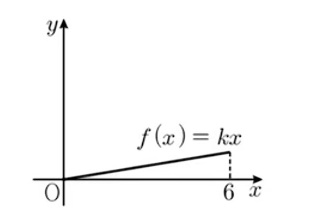
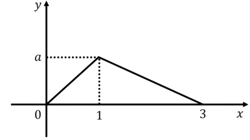
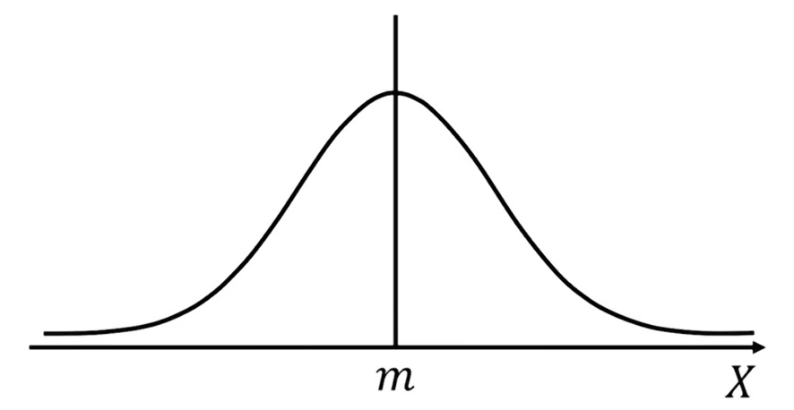
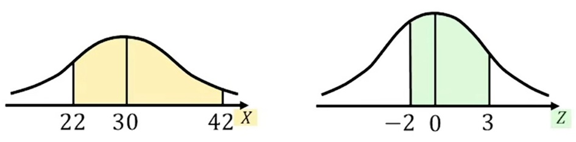

기초 통계 요약

1. 확률분포표
- 경우의 수: 1회의 시행으로 일어날 수 있는 사건의 가짓수
- 확률: 특정 사건이 일어날 경우의 수 / 모든 사건 경우의 수
- 확률분포: 확률변수(Random Variable)가 취할 수 있는 모든 값과, 그 값이 나타날 확률을 표 형태로 짝지어 나타낸 것
1~10중 3개를 선택하는 경우
- 짝수 1개를 선택하는 경우의 수 50 = 5×10 = 5C1(짝수조합) × 5C2(홀수조합)
- 짝수 1개를 선택할 확률 6.94% = 50 / 720 = (5C1 × 5C2) / 10C3
- 짝수의 개수를 X라고 했을 때 확률분포
- P(0) = X가 0일 확률
- P(1) = X가 1일 확률
- P(2) = X가 2일 확률
- P(3) = X가 3일 확률
- 확률분포료
X 0 1 2 3 계 P(X) P(0) P(1) P(2) P(3) 1
- 확률분포표의 작성순서
- 행렬의 구획
- A열1행에 X, A열2행에 P(X) 작성
- 1행에 변수 X가 가질 수 있는 모든 값 나열
- 1행 마지막 열에 “합계"와 2행 마지막 열에 값 1 작성
- 2행에 각 변수일 때의 확률 작성
(예제) 확률변수 X의 확률분포를 나타낸 표가 다음과 같을 때, 상수 a의 값
X 1 2 3 4 합계 P(X) a2 (1/3)a 1/6 1/6 1 a2+(1/3)a+1/6+1/6=1
→ a2+(1/3)a-2/3=0
→ (3a-2)(a+1)=0
→ a = 2/3,-1
(예제) 이산확률변수 X의 확률분포가 다음과 같을 경우 P(X≤2)의 값
X 1 2 3 합계 P(X) a a+1/9 a+1/3 1
- 3a+4/9=1
- a=5/27
- P(X≤2) = 13/27
(예제) 확률변수 X의 확률질량함수가 P(X=x) = k(x-2) (x=3,6,9) 일때 상수 k의 값은?
X 3 6 9 합계 P(X) k 4k 7k 1
- k=1/12
2. 평균, 분산, 표준편차(1)
-
평균 E(X)
- (의미) 확률분포의 중심을 나타내는 값으로 결과들이 평균적으로 수렴하는 값
- (산출) 각 변수값과 그에 따른 확률을 곱한 값의 합
-
분산 V(X)
- (의미) 값이 평균으로부터 얼마나 떨어져 있는지를 제곱해서 평균낸 값
- (산출) E(X2)(제곱의 평균) - {E(X)}2(평균의 제곱)
-
표준편차 σ(X)
- (의미) 분산을 제곱근으로 되돌려 원래 단위로 표현한 값
- (산출) √V(X)
확률변수 X의 확률분포가 다음과 같을 때 평균, 분산, 표준편차는?
X 0 1 2 합계 P(X) 1/4 1/4 1/2 1 - E(X) = 1.25 = (0×1/4)+(1×1/4)+(2×1/2)
- V(X) = 11/16 = 9/4 - 25/16 = {(1×1/4) + (4×1/2)} - (5/4)2
- σ(X) = √11/4
확률변수 X의 확률분포가 다음과 같을 때 σ(X)는?
X 4 6 8 합계 P(X) 1/4 1/2 1/4 1 - E(X) = 6 = (4×1/4)+(6×1/2)+(8×1/4)
- V(X) = 2 = 38 - 36 = (4+18+16) - 62
- σ(X) = √2
-
변수 변경시 평균과 분산 구하는 법
- E(aX+b) = aE(X)+b
- V(aX+b) = a2V(X)
- σ(aX+b) = |a|σ(X) = |a|√{V(X)} = √{a2V(X)} = √{V(aX+b)}
(예제) 확률변수 X의 평균이 5, 분산이 2일 때 확률변수 -3X+2의 E(X)와 σ(X)는?
- E(-3X+2) = -13 = -3E(X)+2
- σ(-3X+2) = 3√2 = 3σ(X)
(예제) 확률변수 X의 확률분포가 다음과 같을 때 확률변수 2X+5의 평균은?
X 0 1 2 3 합계 P(X) 7/30 4/15 4/15 7/30
- E(2X+5) = 8 = 2E(X)+5
(예제) 확률변수 X의 평균이 9, 표준편차가 2일 때 확률변수 Y=3X2-5X의 평균은?
- E(X2) = 85
- V(E) = E(X2) - {E(X)}2 → 4 = E(X2) - 81
- 3E(X2) - 5E(X) = E(3X2-5X)
- E(Y) = 210 = 255 - 45
3. 연속 확률 분포
- 이산확률분포와 연속확률분포의 비교
이산확률분포 연속확률분포 떨어져 있는 이어져 있는 갯수, 횟수, 주사위눈 등 길이, 무게, 시간 등 확률질량함수 확률밀도함수 확률분포표 그래프(넓이 = 확률) - 연속 확률 분포에서 확률은 넓이이며, 전체넓이 즉 전체 확률은 1
(예제) 0 ≤ x ≤ 6 에서 정의된 연속확률변수 X의 확률밀도함수 f(X)=kx의 그래프가 다음과 같을 때, P(0 ≤ x ≤ 3)의 확률은?

- (x=6일 때 함수값 확인) x = 6일때 f(X) = 6k
- (전체 확률 조건으로 k 산출) k = 1/18, 1(전체확률=전체넓이) = 가로×세로/2 = (6×6k)/2
- (k값이 적용된 확률밀도함수 확정) 확률밀도함수 f(X)=(1/18)x
- (x=3일 때 함수값 확인) x = 3일때 f(x) = 1/6
- (0 ≤ x ≤ 3 구간 확률 계산) P(0 ≤ x ≤ 3) = 1/4 = 3×(1/6)/2
(예제) 연속확률변수 X의 확률밀도함수 y = f(x)의 그래프가 다음과 같을 때 P(2 ≤ x ≤ 3)의 확률은?

- (전체 확률 조건으로 a 산출) a = 2/3, 1 = (3·a)/2
- (점-기울기 공식) y - y1 = {(y2 - y1)/(x2 - x1)}·(x - x1)
- (x=2일 때 함수값 확인) f(x) = -1/3·(x - 3) = {(2/3 - 0) / (1 - 3)}·(x - 3)
- (2 ≤ x ≤ 3 구간 확률 계산) P(2 ≤ x ≤ 3) = 1/6 = {1·1/3}/2
4. 이항분포
-
독립시행: 어떤 시행의 결과가 다른 시행의 결과에 영향을 주지 않을 때
주사위를 3번 던질 때,
1의 눈이 0번 나올 확률 3C0·(1/6)0·(5/6)3
1의 눈이 1번 나올 확률 3C1·(1/6)1·(5/6)2
1의 눈이 2번 나올 확률 3C2·(1/6)2·(5/6)1
1의 눈이 3번 나올 확률 3C3·(1/6)3·(5/6)0 -
이항분포: 독립시행으로 이루어진 확률분포
- 주사위를 3번 던질 때, 1의 눈이 나오는 횟수 X
X 0 1 2 3 합계 P(X) 125/216 25/216 5/216 1/216 1 - 이항분포 B(3,1/6) n=시행횟수, p=확률
(예제) 확률변수 X가 이항분포 B(4, 3/4)을 따를 때, P(X=2)는? 9/256
X 0 1 2 3 4 합계 P(X) 4C2·(3/4)2·(1/4)2 1 (예제) 이항분포 B(5, 1/3)을 따르는 확률변수 X에 대하여 P(X≥4)는? 11/243
X 0 1 2 3 4 5 합계 P(X) 5C4·(1/3)4·(2/3)1 5C5·(1/3)5·(2/3)0 1
- 주사위를 3번 던질 때, 1의 눈이 나오는 횟수 X
-
이항분포에서 E(X), V(X), σ(X) 구하는 공식
- E(X) = n·p
- V(X) = n·p·q, q=(1-p)
- σ(X) = √V(X)
(예제) 확률변수 X가 이항분포 B(16, 1/4)을 따를 때, E(X), V(X), σ(X)는?
- E(X) = 4 = 16·1/4
- V(X) = 3 = 16·1/4·3/4
- σ(X) = √3
(예제) 확률변수 X가 이항분포 B(242, 9/11)을 따를 때, E(X), V(X), σ(X)는?
- E(X) = 198 = 242·9/11
- V(X) = 36 = 242·9/11·2/11
- σ(X) = 6 = √36
5. 정규분포
- 표현식: N(m,σ2) N(평균, 분산)
- 정규분포곡선의 작성
- 수평의 x축 생성
- 평균 m을 기준으로 삼아
- 좌우 대칭인 종 모양 그래프 작성

- 확률 산출: 정규분포곡선에서 제시된 구간에 해당하는 넓이
- 표준정규분포표의 해석
z P(0≤Z≤z) 1.0 0.3413 2.0 0.4772 3.0 0.4987 - (걸음 수) Z = X - m(거리)/σ(보폭)
- (거리) X - m
- (보폭) σ
- (해석) 가운데(평균)부터 1걸음까지 걸었을 때의 넓이는 0.3413
- (표준화) X → Z
(예제) 확률변수 X가 정규분포 N(30, 42)을 따를 때, 다음 표준정규분포표를 이용하여 P(22≤X≤42)는?
z P(0≤Z≤z) 1.0 0.3413 2.0 0.4772 3.0 0.4987 0.9759 = 0.4772(P(22≤평균)구간) + 0.4987(P(평균≤42)구간)
(예제) 확률변수 X가 정규분포 N(30, 52)을 따를 때, 다음 표준정규분포표를 이용하여 P(25≤X≤40)는?
z P(0≤Z≤z) 1.0 0.3413 2.0 0.4772 3.0 0.4987 0.8185 = 0.3413(P(25≤평균)구간) + 0.4772(P(평균≤40)구간)
(예제) 확률변수 X가 정규분포 N(20, 42)을 따를 때, 다음 표준정규분포표를 이용하여 P(18≤X≤24)는?
z P(0≤Z≤z) 0.5 0.1915 1.0 0.3413 1.5 0.4332 2.0 0.4772 0.5328 = 0.1915(P(18≤평균)구간) + 0.3413(P(평균≤24)구간)
6. 표준정규분포의 이해
- 표준정규분포표: 정규분포표의 표준
- 표준화(X → Z)의 이론적 배경
- Z(걸음 수) 구하기 = 걸음 수가 같으면 확률도 동일
- 확률변수 X가 정규분포 N(5, 12)을 따를 때, P(5≤X≤6)
- 확률변수 X가 정규분포 N(100, 52)을 따를 때, P(100≤X≤105)
- 확률변수 X가 정규분포 N(70, 32)을 따를 때, P(70≤X≤73)
- 확률변수 X가 정규분포 N(45, 52)을 따를 때, P(45≤X≤50)
- 표준정규분포: N(0, 12)
- Z(걸음 수) 구하기 = 걸음 수가 같으면 확률도 동일
- 표준화 공식
- P(a≤X≤b) = P{(a-m)/σ≤Z≤(b-m)/σ}
- 결론

(예제) 확률변수 X가 정규분포 N(30, 42)을 따를 때, 다음 표준정규분포표를 이용하여 P(22≤X≤42)는?
z P(0≤Z≤z) 1.0 0.3413 2.0 0.4772 3.0 0.4987 (풀이) P(22≤X≤42) = P{(30-22)/4≤Z≤(42-30)/4}
= P(-2≤Z≤3) = P(-2≤Z≤0) + P(0≤Z≤3) = P(0≤Z≤2) + P(0≤Z≤3) = 0.4772 + 0.4987 = 0.9759
7. 표본평균의 분포
- 정규분포 N(m,σ2)는 통계적 추정에 필요
- 통계적 추정이란 모평균의 추청
- 모평균과 모분산은 모집단의 평균과 분산인데, 실생활에서는 모집단의 값을 알기란 불가능
- 그래서 n개의 표본을 임의 추출하여 구해진 평균, 즉 표본평균(x̄)들이 어떻게 분포하고 있는지 알아보는 것을 표본평균의 분포로 이해
- 표본평균의 분포식 X̄~N(m,(σ/√n)2)에서,
- 표본평균의 평균은 모평균과 동일
- 표본평균 x̄의 분포는, 모집단이 정규분포를 따르거나 표본 크기가 충분히 크면, 중심극한정리에 의해 정규분포를 따름.
- 표본평균의 분산은 모집단의 분산을 표본 크기로 나눈 값
(예제) 모평균이 10, 모분산이 16인 모집단에서 크기가 100인 표본을 임의추출할 때,
- E(x̄) = 10
- V(x̄) = 4/25 = (√16/√100)2
- σ(x̄) = 2/5 = √(4/25)
(예제) 정규분포 N(40, 62)을 따르는 모집단에서 크기가 9인 표본을 임의추출한 표본평균을 x̄라 할때, P(38≤X≤44)는?
z P(0≤Z≤z) 1.0 0.3413 1.5 0.4332 2.0 0.4772 2.5 0.4938
- X̄의 분포 = X̄
N(40, 22) = X̄N(40, (6/√9)2)- P(38≤X≤44) = 0.8185 = 0.3413+0.4772 = P{1≤X≤2} = P{(40-38)/2≤X≤(44-40)/2}
(예제) 정규분포 N(45, 62)을 따르는 모집단에서 크기가 4인 표본을 임의추출한 표본평균을 x̄라 할때, P(42≤X≤51)는?
z P(0≤Z≤z) 0.5 0.1915 1.0 0.3413 1.5 0.4332 2.0 0.4772
- X̄의 분포 = X̄
N(45, 32) = X̄N(45, (6/√4)2)- P(38≤X≤44) = 0.8185 = 0.3413+0.4772 = P{1≤X≤2} = P{(45-42)/3≤X≤(51-45)/3}
8. 모평균의 추정
- 95%의 신뢰수준: 동일한 방법으로 표본을 무수히 반복 추출해 신뢰구간을 계산했을 때, 그 구간이 실제 모집단 평균을 포함할 확률이 95%
- ±1.96의 구간: 모집단이 정규분포를 따른다고 가정할 때, 표준정규분포에서 양쪽 꼬리 확률이 각각 2.5%인 지점
- 정규분포에서 95%의 데이터가 평균으로부터 ±1.96 표준편차 범위 안에 들어온다는 결론
- 참고로 99% 신뢰수준은 2.58
(예제) 정규분포 N(m, 102)을 따르는 모집단에서 크기가 400인 표본을 임의추출 하였더니 표본평균이 112였다. 신뢰도 95%로 추정한 모평균 m의 신뢰구간(단, P(|Z|≤1.96)=0.95)
- 모집단 N(m, 102)
- 표본평균의 분포 X̄
N(112, 1/22) = X̄N(112, (10/√400)2)- P(|Z| ≤ 1.96) = 0.95 = P{-1.96 ≤ X ≤ 1.96}
- m의 신뢰구간 111.02 ≤ 112.98 = 112 ± 0.98 = 112 ±(1.96·1/2)
(예제) 정규분포 N(m, 52)을 따르는 모집단에서 크기가 100인 표본을 임의추출 하였더니 표본평균이 71였다. 신뢰도 99%로 추정한 모평균 m의 신뢰구간(단, P(|Z| ≤ 2.58) = 0.99)
- 모집단 N(m, 52)
- 표본평균의 분포 X̄
N{71, (1 / 2)2} = X̄N{71, (5 / √100)2}- m의 신뢰구간 69.71 ≤ 72.29 = 71 ±1.29 = 71 ±(2.58·1/2)
평균·분산·표준편차·Z점수·기여도·상관계수 계산
| 직원 | 업무시간 | 분산 | Z점수 | 생산량 | 분산 | Z점수 | 기여도 |
|---|---|---|---|---|---|---|---|
| 평균 | 3.5 | 2.916666 | 5.5 | 4.916666 | 0.946255 | ||
| 표준편차 | 1.707825 | 2.217355 | |||||
| 1 | 1 | 6.25 | -1.463850 | 2 | 12.25 | -1.578456 | 2.310623 |
| 2 | 2 | 2.25 | -0.878310 | 4 | 2.25 | -0.676481 | 0.594160 |
| 3 | 3 | 0.25 | -0.292770 | 6 | 0.25 | 0.225493 | -0.066017 |
| 4 | 4 | 0.25 | 0.292770 | 5 | 0.25 | -0.225493 | -0.066017 |
| 5 | 5 | 2.25 | 0.878310 | 7 | 2.25 | 0.676481 | 0.594160 |
| 6 | 6 | 6.25 | 1.463850 | 9 | 12.25 | 1.578456 | 2.310623 |